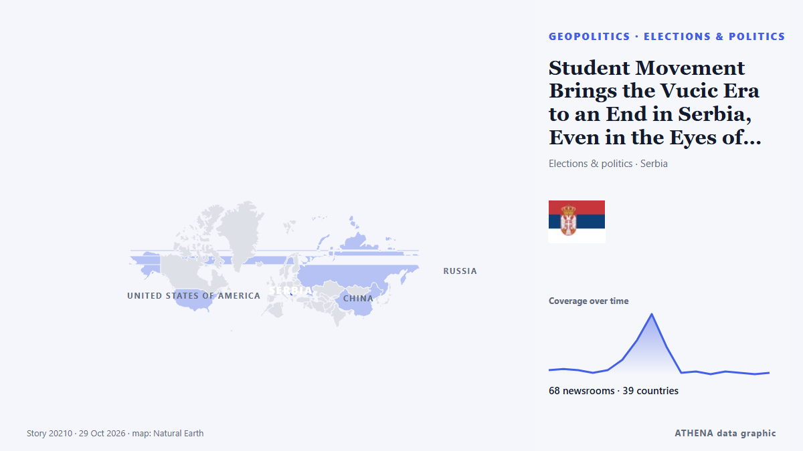

Europa
Europa: los últimos eventos país por país, con riesgo, fuentes y países según ATHENA.

GeopolíticaStudent Movement Brings the Vucic Era to an End in Serbia, Even in the Eyes of the OSCE and the oiip
After two years of student protests, Serbians vote on Sunday in elections that could bring down the ruling party. de BBC News
Patrick Stewart, Star Trek and X-Men actor, dies at 86
Sir Patrick Stewart, the acclaimed British actor best known for playing Captain Jean-Luc Picard in Star Trek: The Next Generation and Professor Charles Xavier in the X-Men film franchise, has died at… de Gulf News
20-year-old Antonelli becomes youngest Formula One world champion
Mexico City is up next in the F1 season and Kimi Antonelli is on the brink of being crowned the youngest world champion in the sport’s history. de The National
#SHOWBIZ: Russell Brand guilty of rape, three sexual assaults
The jury in the Russell Brand rape trial begins its deliberations in London after more than three weeks of evidence. de ABC News Australia
Cristiano Ronaldo brings his international football career to an end
The 41-year-old is Portugal's leading goalscorer having scored 146 goals in 232 appearances. de Express Tribune
France to deploy 70,000 police for fresh weekend protests
France will deploy about 70,000 police nationwide as it braces for new protests on Saturday after some of the worst urban violence in years erupted on the sidelines of demonstrations a week ago. de Dawn
Supermarket freezers in several European countries hit by apparent cyberattacks
Supermarkets in Sweden, Belgium, Luxembourg, Ireland and Estonia were hit Monday by problems with freezers and fridges that apparently were caused by cyberattacks, forcing some to dispose of ruined… de The Canadian Press (via CityNews)